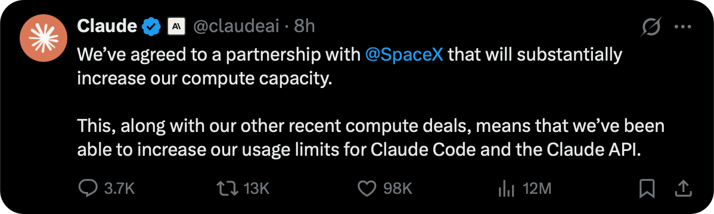
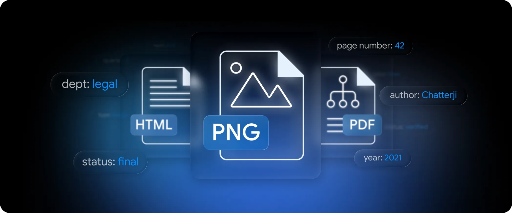
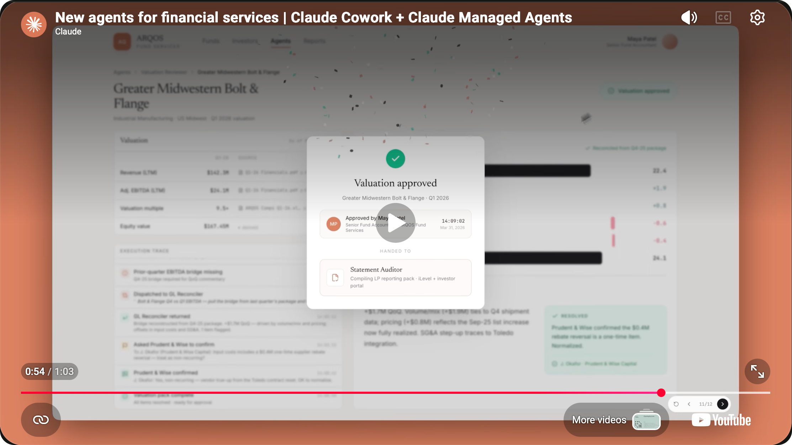

SuuJiKat AI Daily
Anthropic 买下 SpaceX 算力 / Google 让 AI 搜索更可追溯 / Gemini RAG 支持页级引用
2026-05-07 · 过去 24 小时 AIGC 大事件，每天更新
今天这期可以看一个共同信号：
AI 的竞争，正在从“谁更聪明”转向“谁更可用、可验证、可部署”。
今日目录
🚀 Anthropic 获得 SpaceX / xAI 算力，Claude 付费用户限制将提升
🔍 Google 更新 AI Search：AI 回答里加入更多原始网页和直接链接
🧩 Gemini API File Search 支持多模态 RAG、元数据过滤和页级引用
🛡️ Google、Microsoft、xAI 等同意让美国政府提前测试模型
🏦 Anthropic 继续加深金融服务布局，Claude 进入华尔街工作流
🔎 今天的一个判断：AI 产品的下一阶段，不只是生成答案，而是让答案可验证、可追溯、可大规模运行
01｜Anthropic 获得 SpaceX / xAI 算力，Claude 使用限制将提高
发生了什么
xAI 在 5 月 6 日宣布与 Anthropic 达成新的算力合作。Anthropic 将使用这部分额外算力来提升 Claude Pro 和 Claude Max 用户容量。
Axios 报道称，这笔合作涉及 Colossus 1 数据中心。TechCrunch 则把它放进一个更大的问题里讨论：xAI 是否正在变成一种新型云服务提供商。
这条新闻有点戏剧化，因为 Anthropic 和 xAI 原本并不是同一阵营。但对用户来说，最直接的变化是：Claude 的高阶用户限制可能会提高。

SuuJiKat 判断
AI 产品体验的上限，不只由模型决定，也由算力决定。
Claude 如果想支持更多 agent、长任务、代码工作流和高频用户，背后必须有更稳定的推理容量。
今天的重点不是“Anthropic 和马斯克合作很戏剧化”，而是 AI 服务正在进入算力军备阶段。
来源
xAI - Anthropic Compute Partnership
Axios - Anthropic strikes deal with SpaceX for AI computing power
02｜Google 更新 AI Search，让 AI 回答更容易回到原始网页
发生了什么
Google 在 5 月 6 日发布 Search 更新，AI Mode 和 AI Overviews 会加入更多直接链接、原始内容和网站预览。
Google 的说法是，希望用户在 AI 回答中能更容易发现和访问网页内容，而不是只停留在 AI 摘要里。
SuuJiKat 判断
AI 搜索正在补一个关键短板：不是只给你总结，而是让你能回到来源。
对内容创作者来说，这也是一个信号：未来文章能不能被 AI 引用，取决于它是否清晰、可信、结构化。
如果公众号内容只是情绪和搬运，很难成为 AI 搜索里的可信来源。真正值得做的是：明确事实、保留链接、结构化表达。
来源
Google - Explore the web with new generative AI Search experiences
03｜Gemini API File Search 支持多模态 RAG 和页级引用
发生了什么
Google DeepMind 在 5 月 5 日更新 Gemini API File Search。这次更新包括：
· 支持图片和文本的多模态检索。
· 支持自定义 metadata 过滤。
· 支持 page-level citations，也就是页级引用。
这意味着开发者不只是能把文件丢给模型问答，还能让模型更明确地指出答案来自哪一页、哪个内容片段。

SuuJiKat 判断
RAG 的竞争正在从“能不能搜到”进入“能不能解释为什么搜到”。
页级引用对知识库、研究、法律、金融、公众号素材库都很重要。
SuuJiKat 后续的 Harmony 工作流也应该加“来源页级追踪”：每个判断最好能回到具体网页、PDF 页码或原始截图，而不是只留一个模糊链接。
来源
Google DeepMind - Expanded Gemini API File Search with multimodal RAG
04｜美国政府提前测试前沿 AI 模型
发生了什么
Tom's Hardware 报道，Google、Microsoft、xAI 等公司同意让美国政府在模型公开发布前测试其 AI 模型。
报道中也提到，OpenAI 和 Anthropic 已经参与相关安排。
这类提前测试通常和安全、风险评估、能力边界有关。
SuuJiKat 判断
前沿模型不再只是公司产品，也正在变成国家级基础设施。
模型发布前被政府测试，意味着 AI 安全开始进入更制度化的流程。
未来模型发布可能不再只是“训练完就上线”，而会更像药品、金融系统或航空安全：能力越强，外部验证越重要。
来源
Tom's Hardware - US government test AI models before public release
05｜Anthropic 继续加深金融服务布局，Claude 进入华尔街工作流
发生了什么
Anthropic 近期持续强化金融服务方向。5 月 5 日，它举办了 The Briefing: Financial Services 线上活动；Claude for Financial Services 页面也强调 Claude 可以连接 S&P Global、Daloopa 和机构内部系统。
典型使用场景包括：
· 尽调和研究。
· benchmarking。
· 金融分析和建模。
· memo 和 pitch deck 生成。
· 投资组合管理。

SuuJiKat 判断
金融行业给 AI 提了一个更高要求：不只是能生成，而是要能验证、能追溯、能审计。
这和今天 Google 的 AI Search、Gemini File Search 是同一条线：AI 如果要进入真实工作流，就必须回答“来源在哪里”。
来源
今天的一个判断
今天这些新闻放在一起看，主线很清楚：
AI 正在从“生成内容”变成“基础设施系统”。
Anthropic 需要更多算力，说明 agent 体验离不开推理容量。
Google Search 增加原始链接，说明 AI 回答必须回到来源。
Gemini File Search 做页级引用，说明企业 AI 需要可验证。
美国政府提前测试模型，说明前沿 AI 正在被纳入安全制度。
Anthropic 金融服务布局，说明 AI 进入高风险行业时，可信度比炫技更重要。
今天可以写的核心不是“又有几个 AI 新闻”，而是：
AI 下一阶段的竞争，不是谁更会说，而是谁能稳定运行、引用来源、接受验证、进入真实工作流。
SuuJiKat AI Daily｜AIGC 见闻、AI 使用心得与 Harmony 工作流记录。